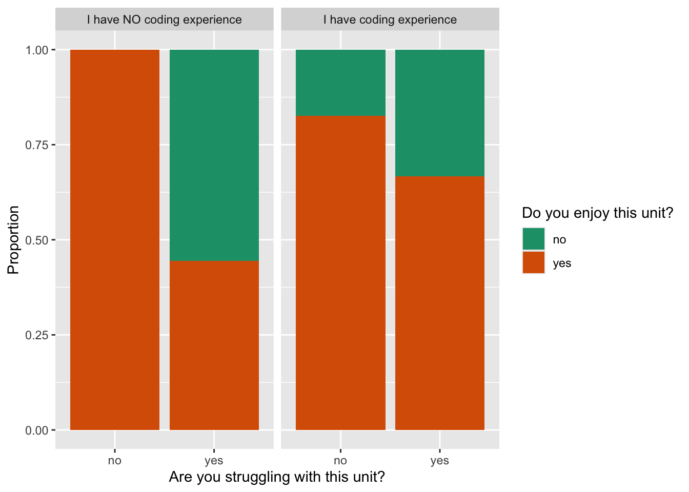
Rookie mistakes and how to fix them when making plots of data
education
statistical graphics
data visualisation
R
ggplot2
In this assignment, the focus was to practice data cleaning. Students suggested questions to build a class survey, to get to know the interests of other class members, and then completed the composed survey. After cleaning the data, a few summary plots of interesting aspects of the data were made. There are some common mistakes that rookies often make when constructing data plots: packing too much into a single graphic, leaving categorical variables unordered, reversing norms for response and explanatory variables, conditioning in wrong order, plotting counts when proportions should be the focus, not normalizing by counts, using a boxplot for small sample size.
This is an explanation of how to avoid common mistakes. We have taken example plots from different group submissions for the assignment, and show how to re-work the plot so that it is more effective at communicating the intended information. The fixes follow these basic principles:
- Reduce complexity
- Order
- Comparing proportions rather than counts
- Sample size appropriate plots
- Order of conditioning
Please don’t be discouraged if you see one of the plots you made in this document, you all did a great job of creating plots and these are suggestions to take your creations and make them better!
Reduce complexity
There is a temptation to pack as much as possible in a single plot. After all, you only get to put a small number of plots in a report. This makes it harder to read anything from the plot, and thus more difficult for the reader to learn about the data.
It is better to break up information dense graphics into smaller chunks. If there is a constraint on the number of plots you can put in a report, you could make an ensemble graphic containing a number of plots, which would count as a single plot. Facetting is an inbuilt way that the grammar of graphics facilitates chunking, to make an ensemble of plots.
Let’s look at an example of an overly complex plot of the interaction between three variables - Q30, Q31, and Q17. There’s a lot going on in this plot.
We interpret the information that we want to communicate is: how enjoyment of the unit, and whether you are struggling, depends on having prior coding experience or not. The chunks are the three pairwise combinations of the three variables. This is a good start to tackling the primary purpose.
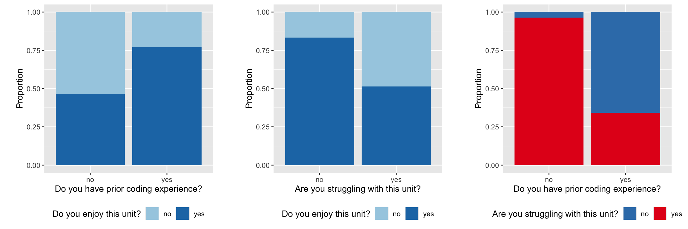
From the three pairwise plots we learn:
- Prior coding experience leads to more likely enjoying the class.
- Struggling with the unit tends to lead to less enjoyment.
- Prior coding experience strongly indicates less struggling.
It may be better to also reflect the sample sizes in each group, using a mosaic plot.
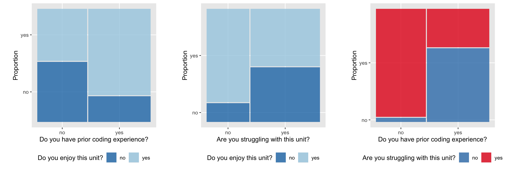
Now let’s put it all into one plot again. Using the mosaic plot, prior coding experience (Q17), and struggling (Q31) are woven into the horizontal axis, and enjoyment (Q30) is mapped to colour, and splits the vertical bars.
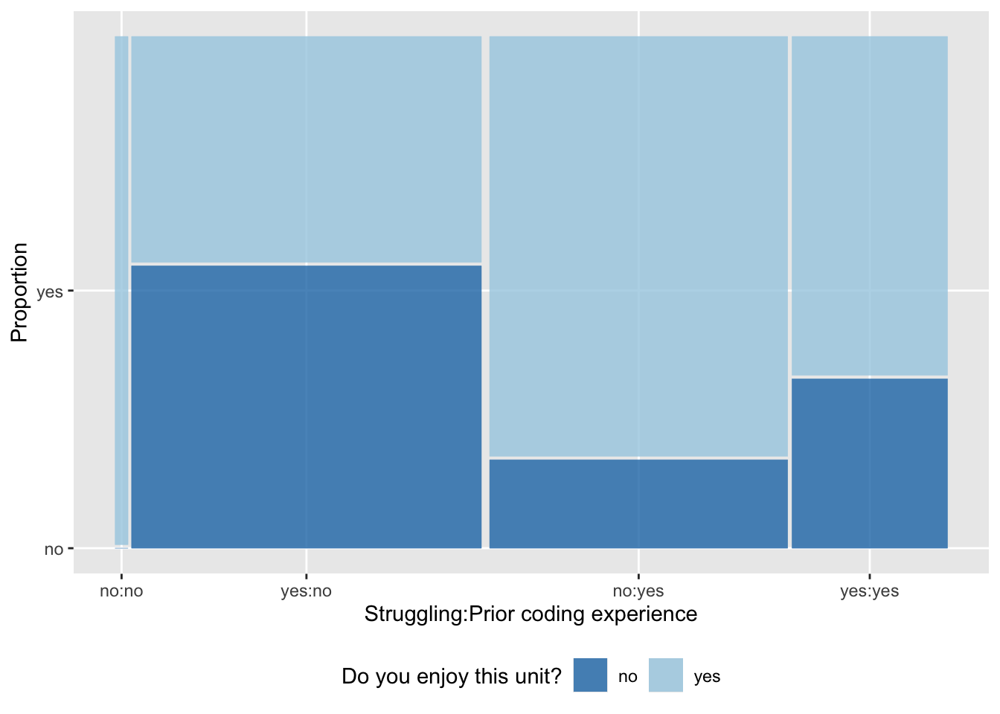
What do we learn?
- There are few people with no coding experience and are not struggling.
- The largest group of unhappy class members have no prior coding experience, and are struggling.
- Most people who have prior coding experience and are not struggling, are enjoying the class.
- About a third of the students who have prior coding experience, and struggling with the class, are unhappy.
Remember one purpose of plots is to communicate what you’ve found in the data to the reader - a more complex plot forces a reader to take longer to understand your findings and has a narrow viewpoint. Breaking a complex plot into chunks allows your reader to slowly gain a richer understanding of the data.
Order
Which is easier to read. This:
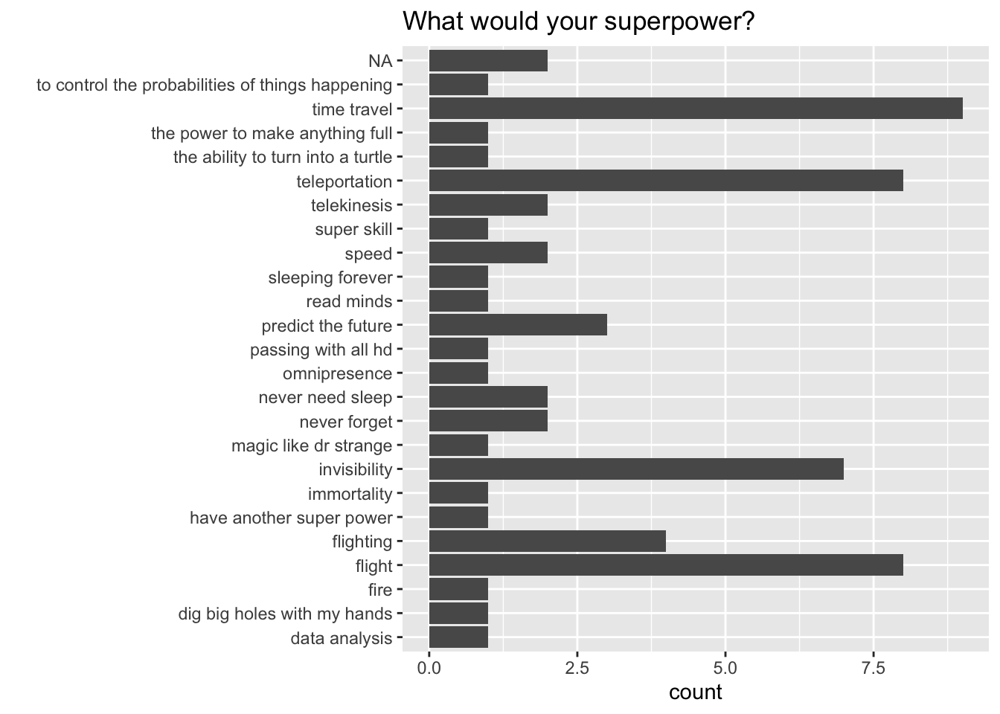
or this:
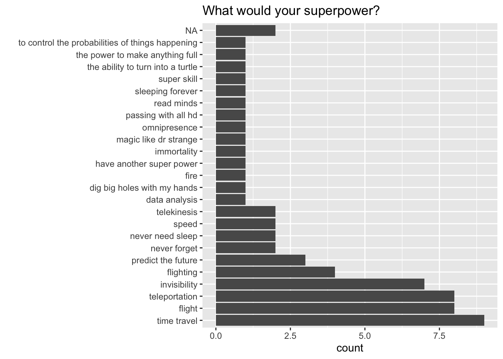
In an unordered bar chart, the reader has to spend more time searching for which is the most frequent category, and it isn’t immediately obvious what the second or third most popular superpower is.
By reordering the categories by the count, this information is more readily available to the reader.
It is hard to re-order! And hence, taking the extra time to make this happen can be dispiriting. However, it is realy easy with the forcats package. Simply use the fct_infreq function when you set the x variable in ggplot:
aes(x=fct_infreq(Q6)), fill=variable)Comparing proportions rather than counts
The plot below was submitted to show examine if the hours studied by students differed whether they were doing a single or double degree. The expectation would be that double degree students need to spend more time studying.
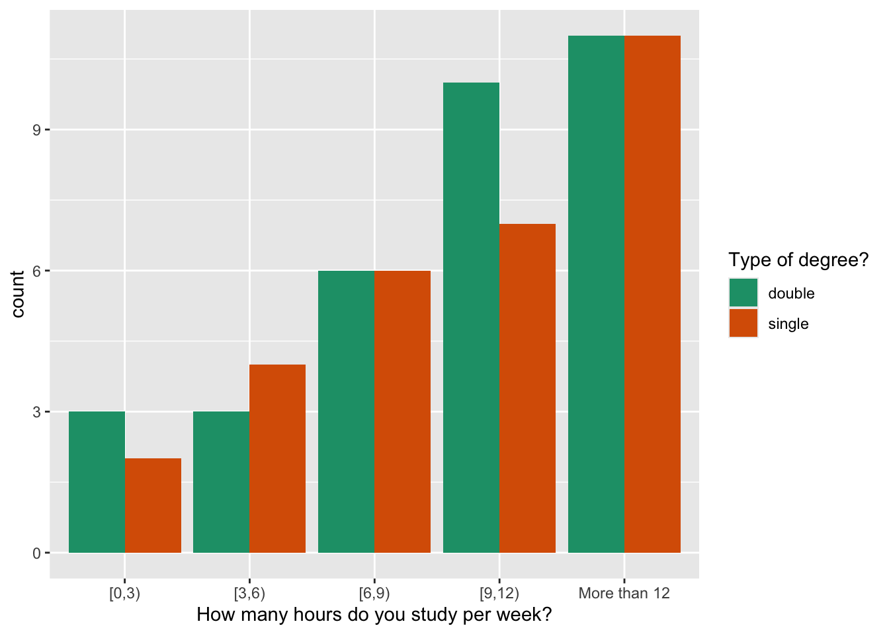
It is helpful to think about which is the explanatory variable and which the response. Here it would be: degree type is explaining study hours. Therefore we need to examine study hours, conditional on degree type.
The plot above would be ok to answer this question, if the same total number of students were doing single vs double degrees. It almost is, but because there is a different number of students in each category, the counts for study hours for each degree type cannot be directly compared. We need to examine proportion of single degree students in each of the study times, and similarly for double degree students.
This would correspond to the plot below.
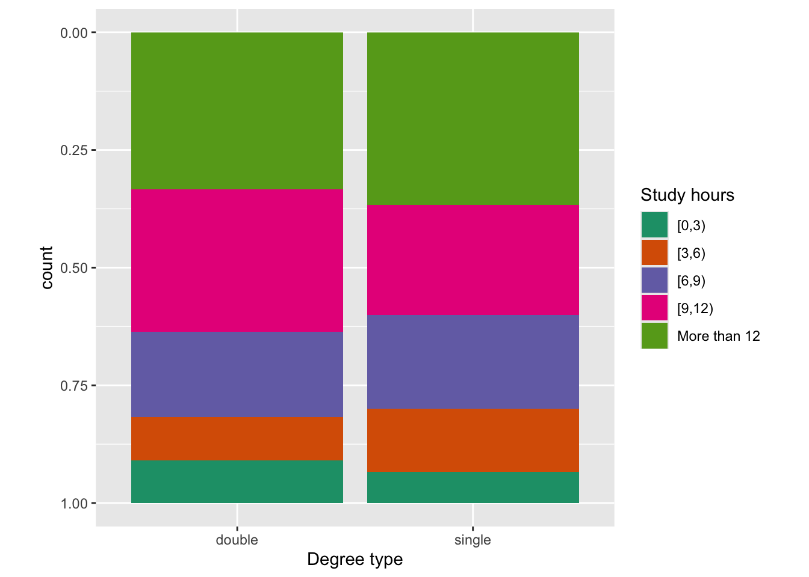
The problem that we have in digesting the proportions from this plot, is that only the very bottom group (0-3, more than 12) and top groups are easy to compare. The rest start and end at different positions, and hence the height of the bars difficult to compare.
Ideally the bars for degree type, would be side-by-side for each study hour category. That’s very close to the original design, with the exception that the heights of the bars should represent proportions.
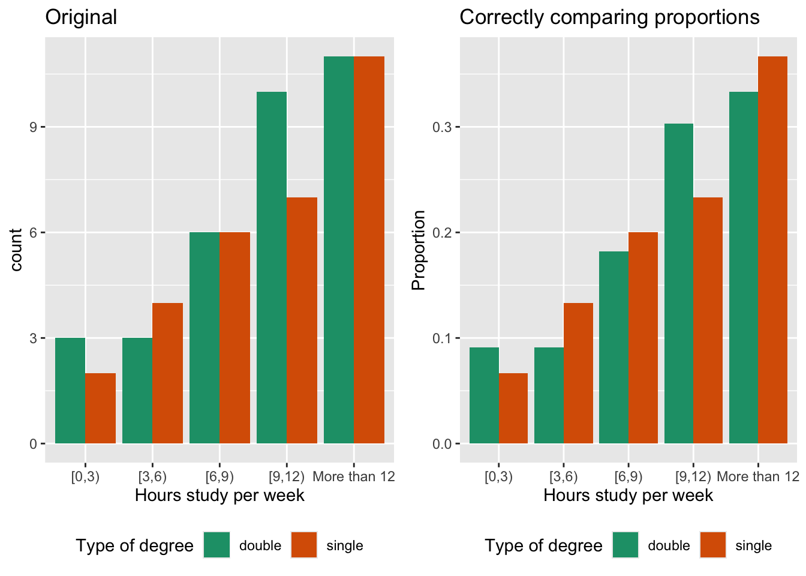
What do we learn?
- Both degree type students tend to put a lot of study time in each week.
- Double degree students are not putting in more study time than single degree students.
Here’s another plot submitted to study a similar relationship, study by year in university. The group summary was:
“We can see overall 3rd year students put a lot more hours into study per week. This could perhaps be due to increased workload during the 3rd year as opposed to 1st year.”
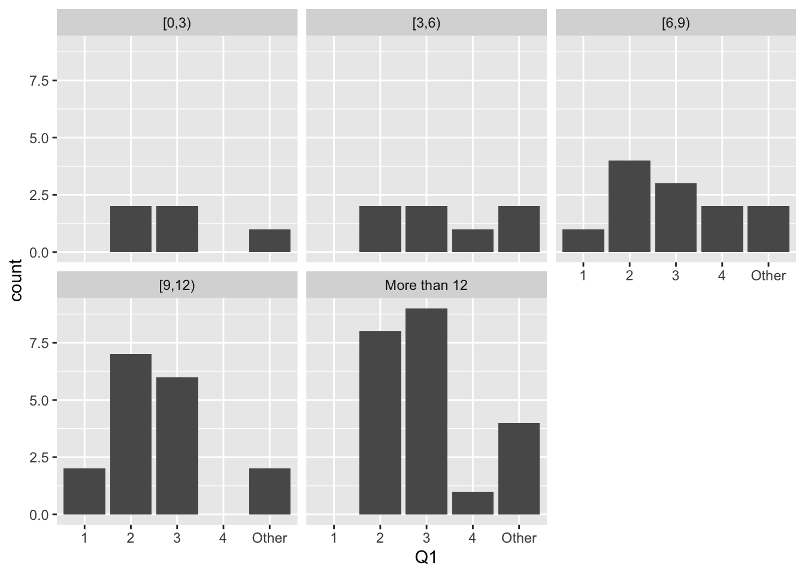
To answer the original question you need to look at the distribution of hours studying, within each year.
Facet by year in school, and then make a bar chart in each facet. You can see that most students are in year 2 or 3, and the counts increase over hours spent studying. Both years have this pattern.
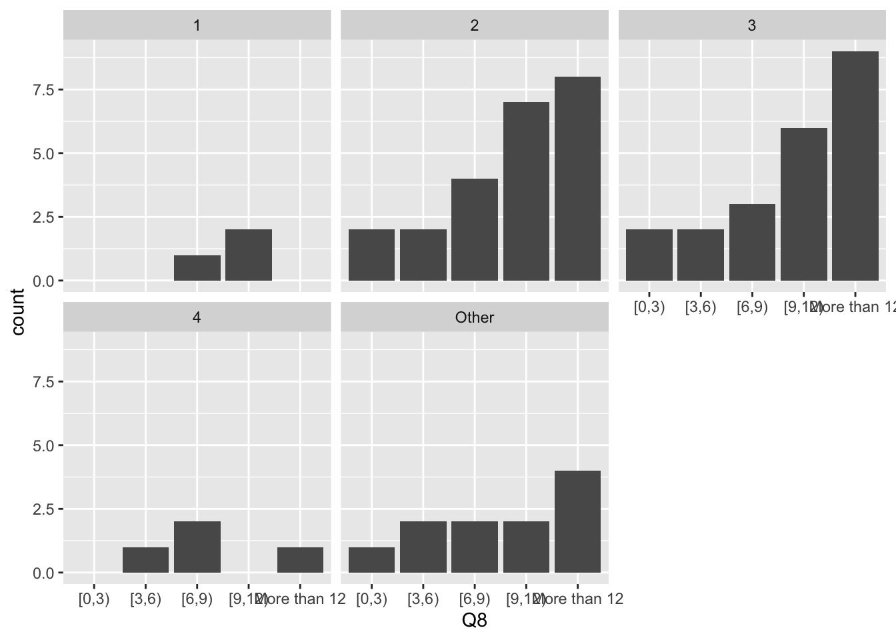
Because numbers are so small in all other groups, drop them, and focus only on years 2 and 3. Then we need to do the same calculations as the previous problem, to compare proportion in each study time, within year.
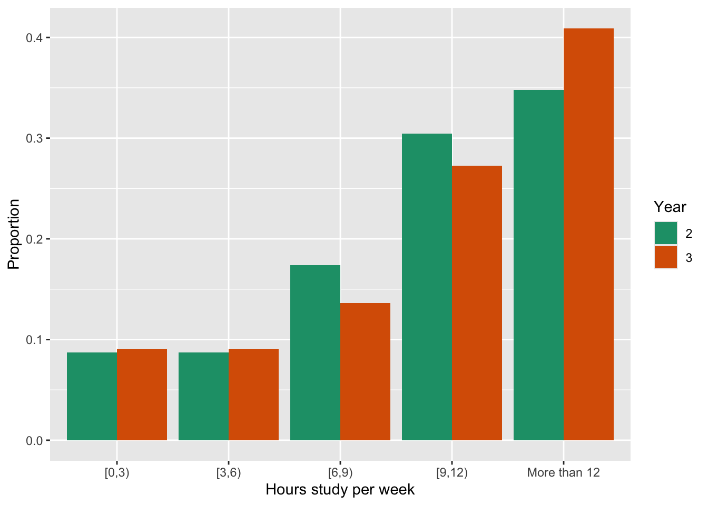
What do we learn?
- Both years spend long hours studying
- More third years report spending more than 12 hours, but its a fairly small difference in proportions. And by contrast the proportions for second years is higher in the next two most study time groups.
- Its hard to argue that the third years are spending more time studying.
Sample size appropriate plots
When a plot performs a statistical transformation of a variable, be aware of the sample size used to calculate the transformation. In a boxplot 5 numbers are computed to summarise a distribution, if the sample size is small, the boxplot can be misleading:
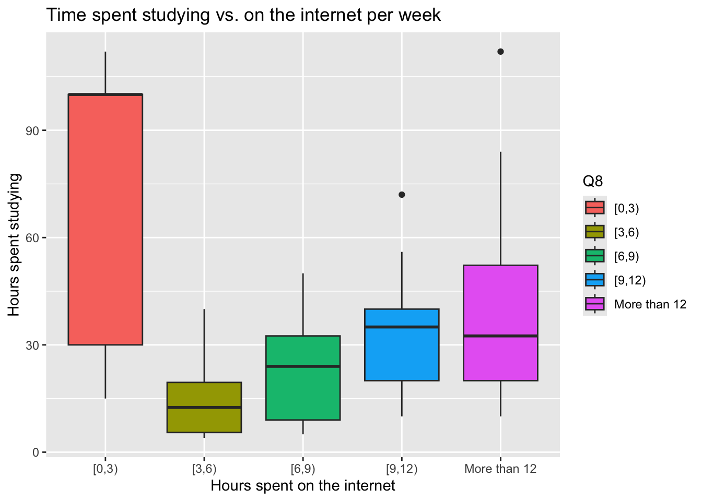
Interpretation: People spending few study hours are spending too much time on the internet.
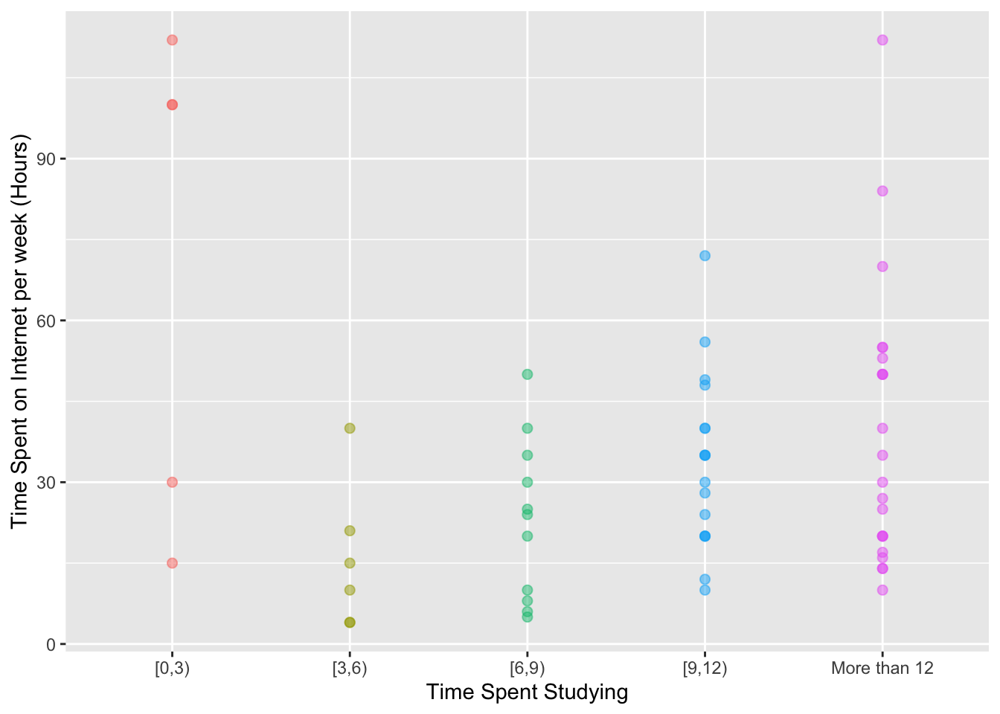
Correction: There’s only three students in the category, of spending too much time on the web and too little time studying.
Order of conditioning
We should condition the response variable (or the variable we are trying to understand) by other variables we think will explain the response. This allows us to examine how the response varies by levels of the explanatory variable.
Goal: how does core or elective vary by year in school.
Which plot is appropriate here?
This:
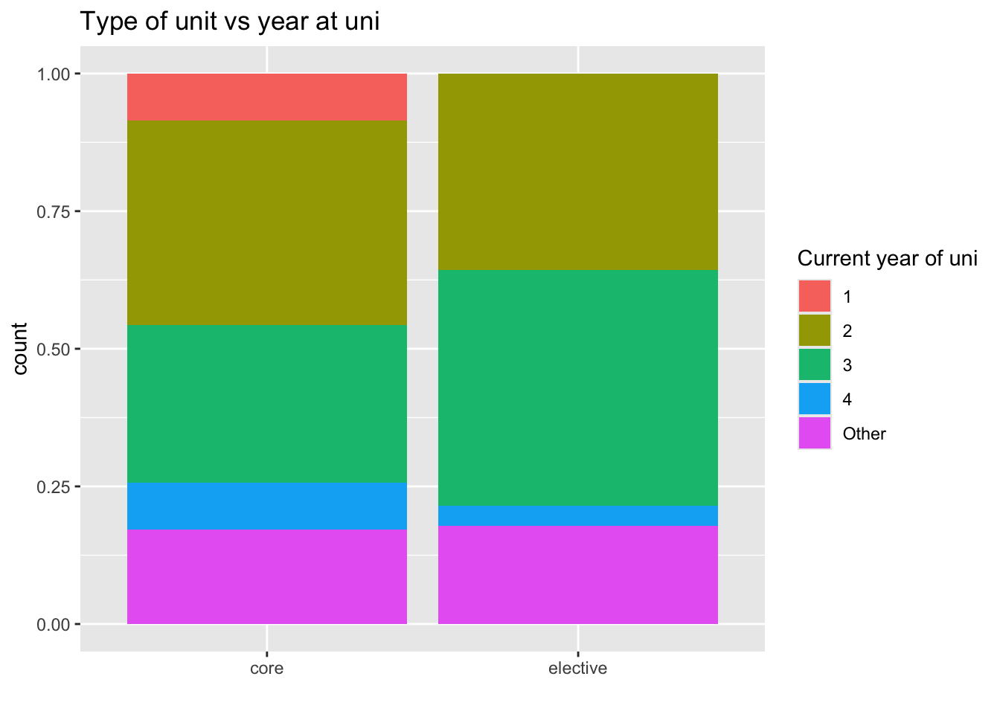
or this:
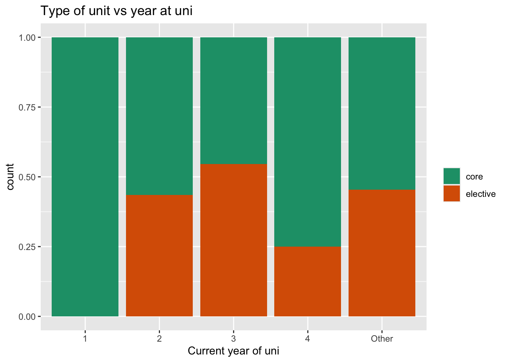
or this:
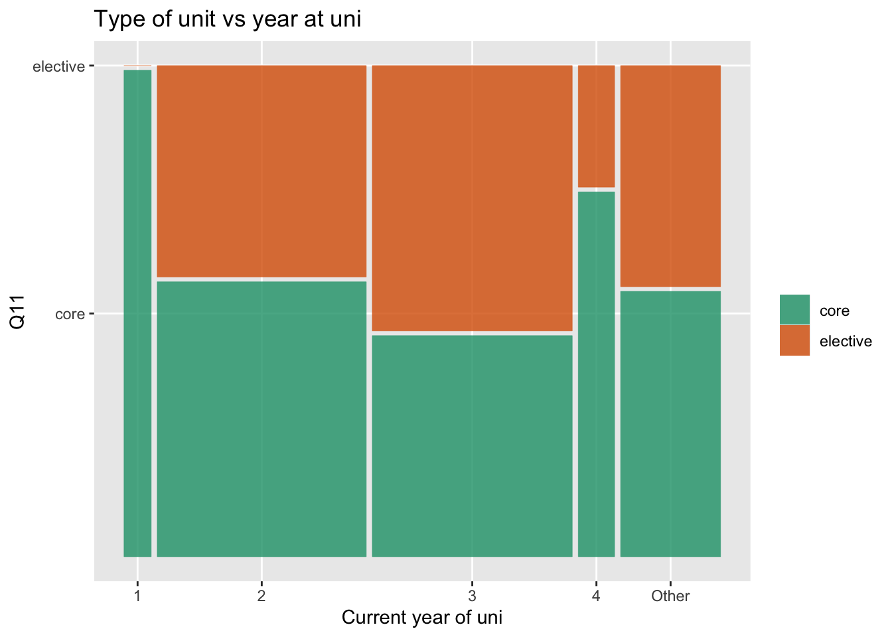
Explanatory variable is year in school, and response is core/elective. This tells us that either of the latter two plots is better than the first.
Because the counts are different in the years in school variable, the last plot (mosaic) is better. It let’s us know that there are few students in years 1 and 4.
What do we learn? There are a few more third year students doing this as an elective.
Summary
Making effective plots can tell you a LOT about data. Its hard! Its an under-rated but very powerful skill to develop.